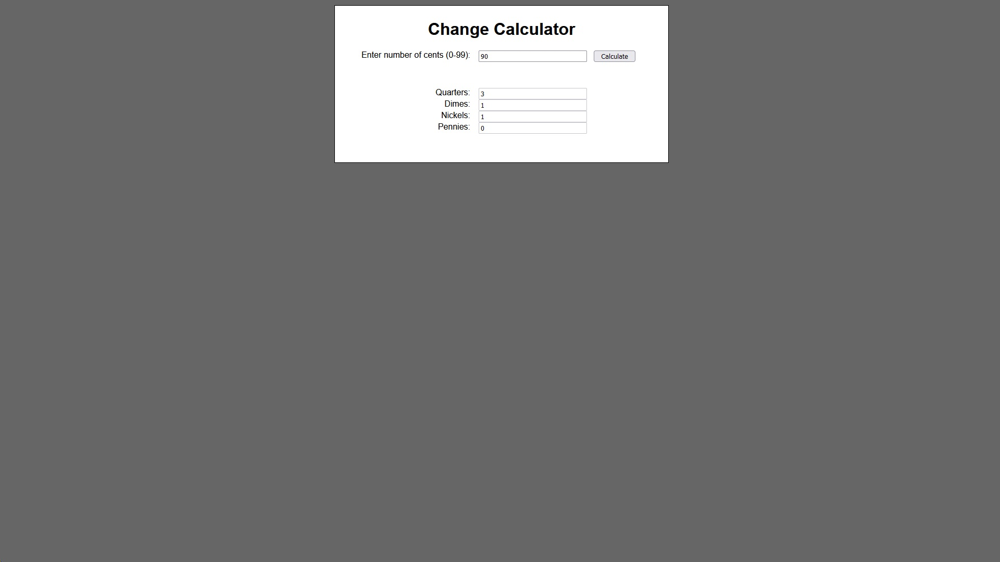
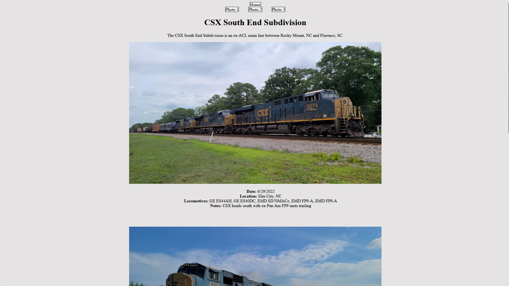
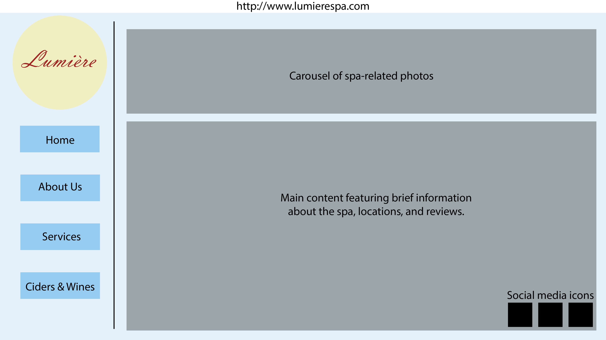

Using JS, I was guided through the creation of a calculator that takes a user-entered number and calculates the fewest US coins needed to make the given number.

Using HTML and CSS, I created a site showcasing my favorite train catches from my hobby on a handful of different railroad lines.Using Adobe Illustrator, I created this Christmas tree scene from scratch after sketching. I used all my graphic design skills to make this digital art.

This website mockup was created given a prompt. Even the logo is made from scratch. I used my design skills to create an efficient and eye-pleasing layout for this fictional spa's website.